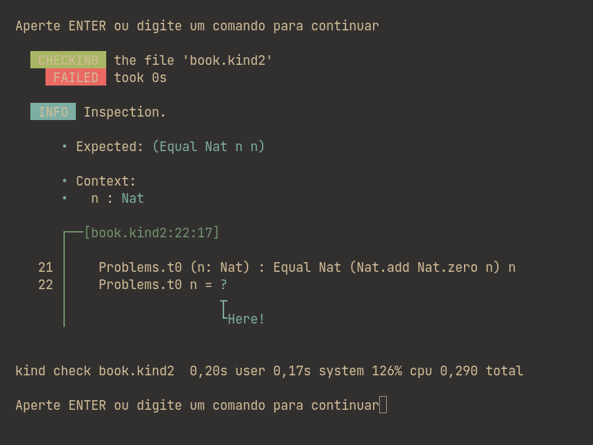
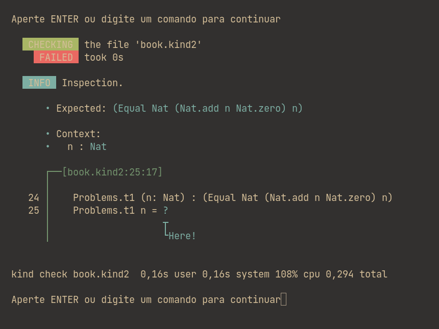
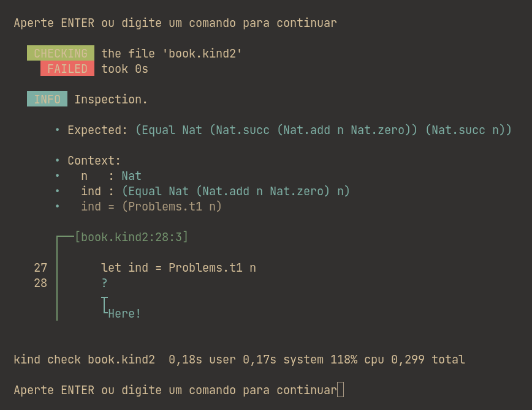
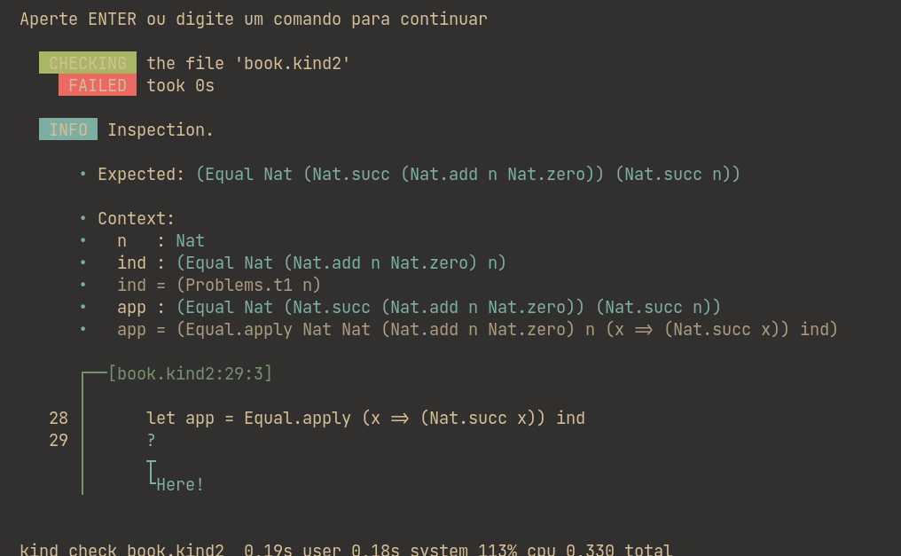

Indução: Prova por Indução
módulo de indução
Nesse capítulo nós veremos sobre provas por indução, mas antes de prosseguirmos para a indução em si, podemos analisar casos simples onde apenas a reflexão do caso já prova o teorema.
#![allow(unused)] fn main() { Problems.t0 (n: Nat) : Equal Nat (Plus Nat.zero n) n) }
Ao verificar verificar o objetivo do teorema, recebemos a seguinte resposta:

No Problems.t0 o Kind reduz a soma de "0 + n" automaticamente para n e que devemos provar a igualdade entre n e n. Nesse caso basta escrever "Equal.refl" e obtemos a resposta de confirmação:
"All terms check."
#![allow(unused)] fn main() { Problems.t1 (n: Nat) : Equal Nat (Plus n Nat.zero) n) }
Feito o primeiro problema, o seguinte é muito similar, é a soma de "n + 0 = n" e essa similaridade pode nos levar a crer que basta invocar a reflexão. Entretanto, no primeiro caso o Kind reduz automaticamente e nesse nós obtemos o seguinte retorno:

No primeiro caso o Kind reduz pois o zero está à direita e o Type Checker já reduz automaticamente, a soma de entre 0 e n para n. Entretanto, quando o primeiro input é uma variável, o Kind necessita verificar para cada caso e como é um número natural, há infinitos casos a serem testatos, isto é, de zero a infinito.
De início podemos pensar que são tantos casos e que é impossível analisar todos eles, já que são infinitos, mas logo percebemos que é possível reduzir a dois, um é o número zero e o outro é um número que sucede o zero n vezes depois.
Analizando para o caso de zero nosso objetivo é provar que zero é igual a zero:
#![allow(unused)] fn main() { • Expected: Equal Nat Nat.zero Nat.zero) }
Agora basta dar o Equal.refl e o caso zero já foi comprovado, basta apenas responder para o sucessor de zero
Nosso objetivo é provar que para todo número n, ao adicionar 0 o resultado será n, mas já temos uma nova ferramenta que nos auxilia nessa prova e é a prova para o caso zero, basta reduzir n até que o necessário seja apenas a reflexão e podemos fazer isso por meio da recursão e para isso definimos o novo n como o antecessor dele. No Kind nós podemos fazer isso simplesmente definindo o n atual como sendo o sucessor do próximo n e chamar a função para n recursivamente. Isso é feito da seguinte forma:
#![allow(unused)] fn main() { Problems.t1 (Nat.succ n) = ? }
e temos como novo objetivo provar que o sucessor da soma entre n e 0 é igual ao sucessor de n
#![allow(unused)] fn main() { - Expected: Equal Nat (Nat.succ (Plus n Nat.zero)) (Nat.succ n)) }
Para trabalhar com a indução nessa recursão, devemos definir uma variável para o caso original de n
#![allow(unused)] fn main() { Problems.t1 (n: Nat) : Equal (Plus n Nat.zero) n) Problems.t1 Nat.zero = Equal.refl Problems.t1 (Nat.succ n) = let ind = Problems.t1 n ? }
Ao dar o Type Check temos como retorno a seguinte resposta:

Ao analizar nosso objetivo e a indução, percebemos que a única diferença entre o objetivo e a nossa variável ind é o Nat.succ, basta então incrementar a variável ind com o Nat.succ, para isso nós criamos uma nova variável e usamos uma função lambda:
#![allow(unused)] fn main() { let app = Equal.apply (x => (Nat.succ x)) ind) }
No caso acima nós chamamos a função Equal.apply para aplicar a nossa
função lambda ao ind. A função x => (Nat.succ x) serve para adicionar
Nat.succ a todo elemento recebido na variável. Como nossa variável ind
é uma função que recebe uma outra variável n, a nossa função lambda
incrementa a n com Nat.succ, o que retorna exatamente o nosso
objetivo:

Podemos perceber que o app é exatamente igual ao Expected, que é o nosso objetivo e basta apenas retornar ele, o app para que o Type Check valide a nossa prova: All terms check.
Há casos em que a indução é ainda mais simples, basta compreender o que está acontecendo. Imagine que você quer provar que um número n menos ele mesmo é igual a zero, independente de qual seja esse número. Como faríamos?
Primeiro, nós verificamos para o caso dele ser zero e é uma igualdade verdadeira, zero menos zero é igual a zero. Depois, nós induzimos o caso para o caso de zero, que sabemos ser verdadeiro. Parece complicado? Não é, é absurdamente simples, vamos ver como fica isso em Kind:
Minus_diag (n: Nat) : Equal Nat (Minus n n) Nat.zero
Minus_diag Nat.zero = Equal.refl
Minus_diag (Nat.succ n) = Minus_diag n
Perceba, essa é uma indução simples, nós falamos que a prova vale para o número e o antecessor dele e, por usarmos uma recursão, para todos os antecessores até zero, que é o caso que verificamos ser verdadeiro. Ou seja, provamos, em apenas três linhas, que um número natural menos ele mesmo sempre dará zero, independente de qual for esse número.